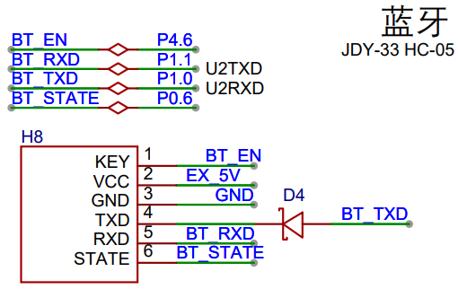
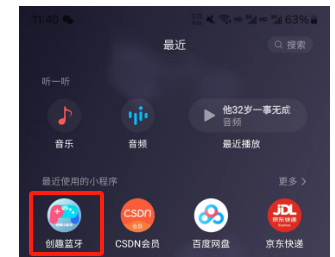
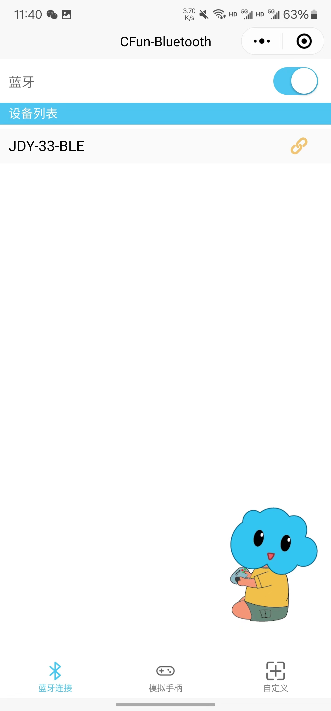
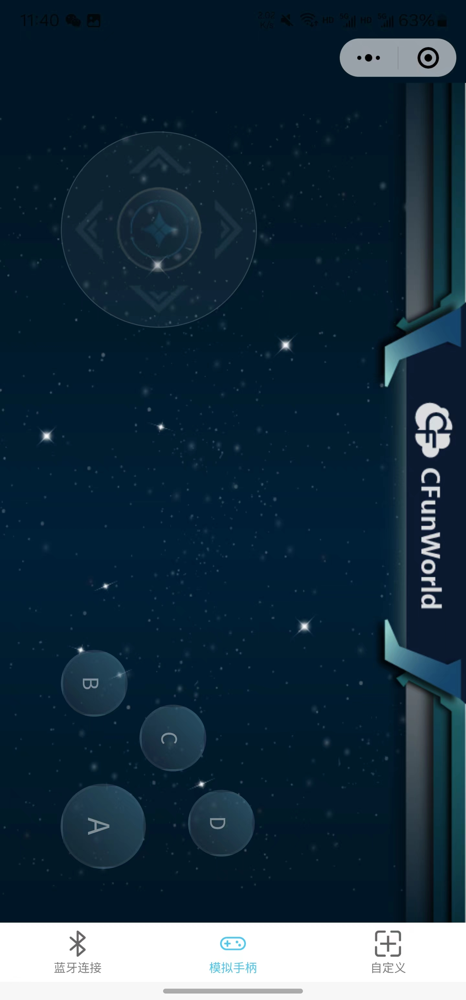
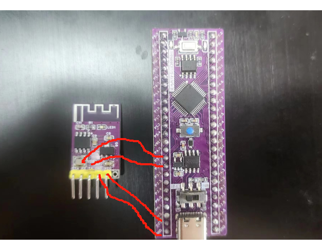

<!DOCTYPE lake>
<h3 data-lake-id="EweTG" id="EweTG"><span data-lake-id="u0407e527" id="u0407e527">原理图</span></h3><p data-lake-id="u3865bef5" id="u3865bef5"></p><h3 data-lake-id="adXxH" id="adXxH"><span data-lake-id="u9de44219" id="u9de44219">蓝牙模组JDY-33</span></h3><p data-lake-id="u59e53a44" id="u59e53a44"><span data-lake-id="ua2cdfc97" id="ua2cdfc97"> JDY-33 蓝牙基于蓝牙 3.0 SPP+BLE 设计，这样可以支持 Windows、Linux、android、IOS 数据透传，工作频段 2.4GHZ，调制方式 GFSK，最大发射功率 6db，最大发射距离 30 米，支 持用户通过 AT 命令修改设备名、波特率等指令，方便快捷使用灵活.</span></p><p data-lake-id="u90e4d362" id="u90e4d362"><span data-lake-id="ue837d7be" id="ue837d7be">详情见模组手册：</span></p><p data-lake-id="ub7ca41a2" id="ub7ca41a2"><a class="yuque-card-link" href="../../_assets/dce6715dc67f5e28038887bf.pdf">JDY-33-V2.2蓝牙SPP串口透传模块手册.pdf</a></p><p data-lake-id="u43e9089c" id="u43e9089c"><a class="yuque-card-link" href="../../_assets/9995dbae022f47f5e8742289.pdf">JDY-33-V2.2带底板手册.pdf</a></p><h3 data-lake-id="m5eHu" id="m5eHu"><span data-lake-id="u58f2b70d" id="u58f2b70d">AT指令测试</span></h3><p data-lake-id="u84262bd1" id="u84262bd1"><span data-lake-id="u96493353" id="u96493353">AT是Attention的缩写，表示指令开始信号。AT指令集常见于通讯设备的内部控制指令。如蓝牙、WIFI模块等等。</span></p><p data-lake-id="u35dbc9ce" id="u35dbc9ce"><span data-lake-id="u28f51e8e" id="u28f51e8e">当前的蓝牙模块可以通过AT指令来获取或者设置一些信息。我们需要通过发送AT指令的方式来进行操作，因此我们需要一个调试环境，下图中，我们使用PC进行调试：</span><span data-lake-id="ube2b4815" id="ube2b4815">​</span></p><p data-lake-id="u89ba37a9" id="u89ba37a9"></p><p data-lake-id="u0d33b63b" id="u0d33b63b"><span data-lake-id="uc4775bea" id="uc4775bea">PC端通过串口1将AT指令发送给我们的MCU，MCU收到指令后，通过串口2转给蓝牙模组，这样就间接的通过PC来调试蓝牙模组了。</span></p><p data-lake-id="u66d84687" id="u66d84687"><span data-lake-id="u9f5f8c67" id="u9f5f8c67">通过调试工具进行测试：</span></p><p data-lake-id="u052a5e83" id="u052a5e83"></p><p data-lake-id="u96496944" id="u96496944"><span data-lake-id="uf2be92c5" id="uf2be92c5">注意：AT指令结束需要加上换行符号，否则蓝牙模组不会应答数据。</span></p><p data-lake-id="u1cf6455d" id="u1cf6455d"><strong><span data-lake-id="uef68aa56" id="uef68aa56">SPP (Serial Port Profile):</span></strong></p><p data-lake-id="u752e2ec9" id="u752e2ec9"><span data-lake-id="ue5c33a14" id="ue5c33a14">SPP代表串口配置文件，它是蓝牙技术中的传统蓝牙协议之一。SPP旨在模拟传统的串口通信，使设备能够通过蓝牙建立虚拟的串口连接，并通过该连接进行数据传输。这种协议通常用于传输简单的串行数据，例如从一个设备向另一个设备发送文本、命令或其他基本数据。</span></p><p data-lake-id="u6cb80d92" id="u6cb80d92"><span data-lake-id="ua92bf7a3" id="ua92bf7a3">​</span><br/></p><p data-lake-id="uc4b7124a" id="uc4b7124a"><strong><span data-lake-id="ub6497d28" id="ub6497d28">BLE (Bluetooth Low Energy):</span></strong></p><p data-lake-id="uadb1abba" id="uadb1abba"><span data-lake-id="u5320f677" id="u5320f677">BLE代表低功耗蓝牙，也被称为蓝牙4.0或蓝牙Smart。它是蓝牙技术的另一种变体，专门设计用于低功耗设备之间的通信。BLE主要用于与物联网（IoT）设备、传感器、健康设备和其他需要低功耗和较短通信距离的设备进行通信。相比传统的蓝牙，BLE在连接过程和数据传输中消耗更少的能量。</span></p><h3 data-lake-id="CSn3U" id="CSn3U"><span data-lake-id="ud9b50b78" id="ud9b50b78">使用创趣蓝牙控制小车</span></h3><p data-lake-id="ubbf989fe" id="ubbf989fe"><span data-lake-id="u38fa025d" id="u38fa025d">微信搜索小程序创趣蓝牙</span></p><p data-lake-id="u6e8cf3f9" id="u6e8cf3f9"></p><p data-lake-id="u7571aea1" id="u7571aea1"><span data-lake-id="u2cc035e3" id="u2cc035e3">进入小程序链接蓝牙</span></p><p data-lake-id="u300a63c3" id="u300a63c3"><span data-lake-id="u797efdda" id="u797efdda">使用模拟手柄控制小车</span></p><span class="yuque-card-unsupported">[codeblock]</span><p data-lake-id="ubf54375d" id="ubf54375d"><strong><span data-lake-id="udf4c5a79" id="udf4c5a79">使用stc8修改蓝牙名字</span></strong></p><p data-lake-id="u835006a0" id="u835006a0"><span data-lake-id="u9f4055d3" id="u9f4055d3">将蓝牙模块的rx tx vcc gnd 链接上stc8模块的P30（rx），P31（tx）,VCC GND 这个引脚。</span></p><p data-lake-id="u49946440" id="u49946440"><strong><span data-lake-id="u4f82faf0" id="u4f82faf0" style="color: #DF2A3F">注意rx接rx tx接tx（这里不需要反接）。</span></strong></p><h4 data-lake-id="WkFxF" id="WkFxF"></h4>